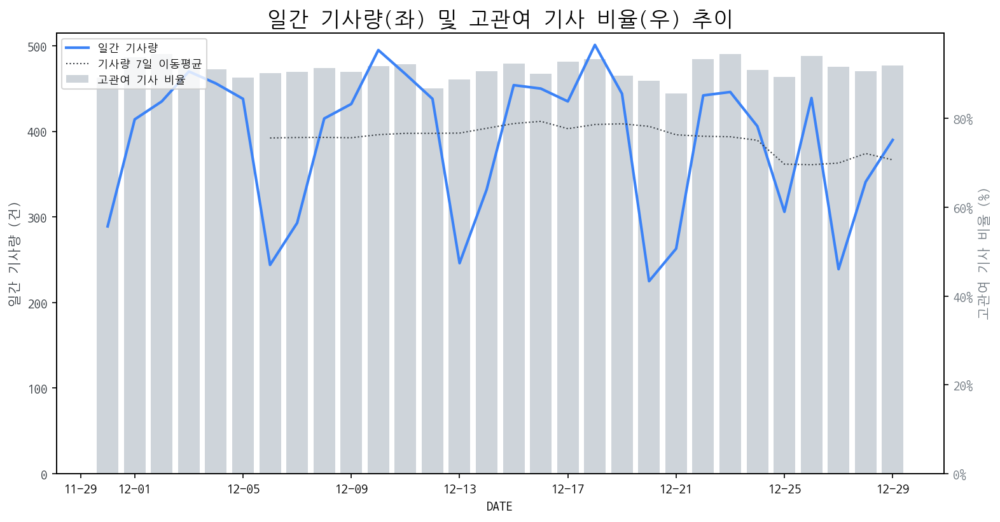

1
시장 활동 지표
기사량 추세 & 이상 징후 탐지
시장의 '전체 기사량'이 평소보다 비정상적으로 급증했는지(Spike)를 차트로 확인하고, LLM이 분석한 급등의 핵심 원인을 파악할 수 있음

고관여 기사란? 산업 연관 키워드로 수집된 기사들 중 디스플레이 키워드에 가중치를 반영하여 도출된 관련성 높은 기사
수집된 기사 수 (2025-12-29)
390
-12% WoW
기사량 변동 수준 (7일 이동평균 대비)
±6.7% 이하
2
오늘의 키워드
급격한 관심 ↑, 주목해야 할 키워드
금일 유의미한 급등 신호는 포착되지 않았습니다.
3
실시간 Risk 키워드
경계해야 할 시그널 탐지
특정 토픽의 부정 감성 점수가 급등할 때 이를 즉시 탐지하고, "근거 기사" 링크를 통해 리스크의 실체를 빠르게 파악할 수 있음
키워드 분석 결과, 오늘은 걱정할 만한 하락 신호가 없습니다. (부정 언급량 변화: +1.5σ 이내)
4
주요 이벤트 모니터링
실시간 산업 동향 파악을 위한 주요 활동
최근 발생한 주요 기업들의 신제품 출시, 투자 등 주요 이벤트를 제공하여 매일 경쟁사 동향을 확인할 수 있음
자율주행차 관련 업계에서 긍정적인 분위기가 감지되며 삼보모터스, 오비고, 에스오에스 등 관련 기업들의 주가가 상승세를 보이고 있습니다. 이는 시장에서 자율주행차 기술 및 상용화에 대한 기대감이 높아지고 있음을 시사합니다.
Impact
자율주행차 시장의 성장은 차량 내 디스플레이 수요 증가 및 고도화된 디스플레이 기술(고해상도, 인터랙티브 기능, 투명 디스플레이 등)의 필요성을 증대시킬 것입니다.
Next Step
디스플레이 제조 기업은 자율주행차에 최적화된 혁신적인 디스플레이 솔루션 개발 및 관련 부품 공급망 확보를 검토해야 합니다.
글로벌 TV 시장 출하량 집계 결과, 삼성전자는 전년 대비 제자리걸음했으며 LG전자는 소폭 감소세를 보였다. 이는 두 주요 제조사의 시장 점유율 방어 및 확대에 대한 새로운 전략적 접근이 필요함을 시사한다.
Impact
주요 제조사들의 부진은 프리미엄 및 차별화 기술 개발 경쟁을 더욱 심화시키고, 신흥 시장 공략 및 가격 경쟁력을 강화하는 방향으로 시장 재편을 가속화할 수 있다.
Next Step
디스플레이 제조 기업은 현재의 시장 점유율 변화 추세를 면밀히 분석하고, 기술 혁신을 통한 제품 차별화 및 효율적인 생산/유통 전략 수립에 집중해야 한다.
연말 산타랠리 시즌이 도래하며 코스닥 시장 주도주 선점 기회가 거론되고 있다. 이러한 시장 흐름은 디스플레이 관련 기업들에게도 긍정적인 영향을 미칠 가능성이 있다.
Impact
연말 투자 심리 개선과 코스닥 시장 상승세에 힘입어 디스플레이 관련 기업들의 주가 상승 및 투자 유치가 활성화될 수 있다.
Next Step
디스플레이 제조 기업은 시장의 투자 관심 증대에 맞춰 기술력과 성장성을 부각할 수 있는 전략을 수립하고 적극적인 IR 활동을 준비해야 한다.
2026년 애플의 스마트링 출시 가능성에 대한 루머가 제기되었습니다. 이는 XRP 가격 등 암호화폐 시장 움직임에 대한 언급과 함께 보도되었습니다.
Impact
스마트링의 디스플레이 적용은 웨어러블 기기용 소형 디스플레이 시장의 새로운 성장 동력이 될 수 있습니다. (단, 해당 기사는 암호화폐 시장에 더 초점을 맞추고 있어 디스플레이 시장 영향은 간접적입니다.)
Next Step
소형 및 고해상도 디스플레이 기술 개발 역량을 강화하고, 웨어러블 기기 제조사와의 협력 기회를 모색해야 합니다.
이 이벤트는 생성형 AI 시대를 맞아 트럼프와 시진핑과 같은 주요 국가 지도자들도 주목하는 경영 전략 및 기술 혁명에 대한 내용을 다룹니다. 이는 AI 기술 발전이 글로벌 정치 및 경제 전략에 미치는 중요성을 강조합니다.
Impact
생성형 AI의 급속한 발전과 이를 둘러싼 지정학적 경쟁 심화는 디스플레이 기술의 고도화 및 새로운 응용 분야 개발에 대한 수요를 촉진하고, 관련 공급망 및 기술 표준에 영향을 미칠 수 있습니다.
Next Step
디스플레이 제조 기업은 생성형 AI 구현에 필수적인 고성능, 저전력, 고해상도 디스플레이 기술 개발에 집중하고, AI 기반의 생산 및 공정 최적화 솔루션 도입을 검토해야 합니다.
5
지금 주목해야 할 뉴스 TOP 3
[김도형의 럭키7] 유리기판, 유리인터포저 시장 개화 기대 '켐트로닉스...
김도형의 럭키7] 유리기판, 유리인터포저 시장 개화 기대 '켐트로닉스' [MTN 성공! 마감전략] 김도형의 럭키7박진성 PD 진행 : 김솔지 앵커 출연 : 김도형 MTN W 어드바이저 오전 주도 반도체 VS 오후 주도 에너지 반도체 - CES2026, AI· 피지컬AI· 모빌리티 등 강조 - 엔비디아, 그록과 협업... 시장 지배력 강화 - 엔비디아, 그록과 협업... 시장 지배력 강화 - SK하닉 투자경고 해제 후 수급 유입 확대, 메모리 전 부분 쇼티지 확대 - 메모리 전 부분 쇼티지 확대 - 금· 은· 구리 등과 비슷한 메모리 가격 흐름 - SK하닉, 사상 최고가 돌파 기대감 확대 중 - SK하닉, 투경 해제 이후 수급 유입 확대 에너지 - SK하닉, 사상 최고가 돌파 기대감 확대 중 - SK하닉, 투경 해제 이후 수급 유입 확대 에너지 - 본격 AI 추론 시장, 피지컬AI 시장 준비 - 글로벌 에너지 부족 현상 지속 확대 중 - 원전, 전력기기, 전선 시장 수급 유입 - LS일렉, 2
2025년 디스플레이 대전환... 韓, 아이폰17 패널 98% 장악 VS 中 BOE '참패...
2025년 세계 디스플레이 산업이 물량으로 승부하던 ‘생산능력(Capacity) 전쟁’을 끝내고 기술력으로 우위를 가리는 ‘기술 가치(Technology Value) 대결’로 완전히 돌아섰으며 한국 기업들은 액정표시장치(LCD) 사업에서 손을 떼고 유기발광다이오드(OLED) 초격차를 굳힌 반면, 중국은 LCD 시장 지배력을 높이고 대만은 마이크로LED 등 신기술 상용화에 속도를 내고 있다고 대만 디지타임스가 29일(현지시각) 보도했다.
삼성D, 내년 폴더블 디스플레이 점유율 과반 이상 전망…폴더블 아이폰...
로컬 요약 모델 실행 중 오류 발생: 제목을 클릭하여 기사 전문을 확인할 수 있습니다.